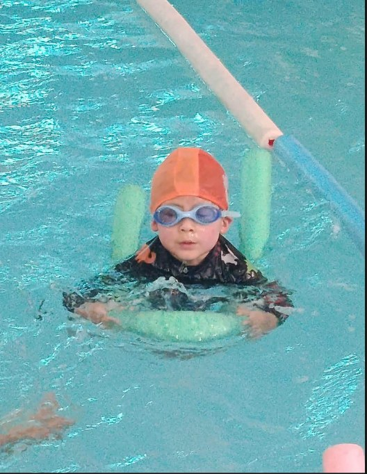
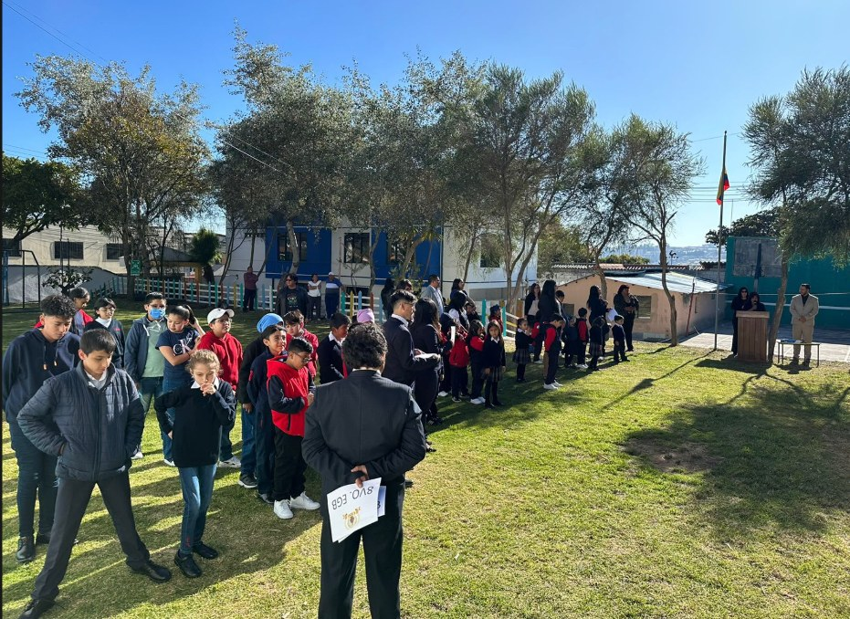
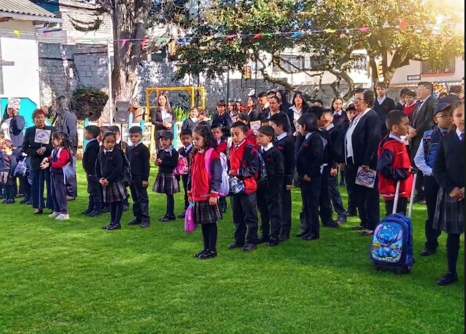
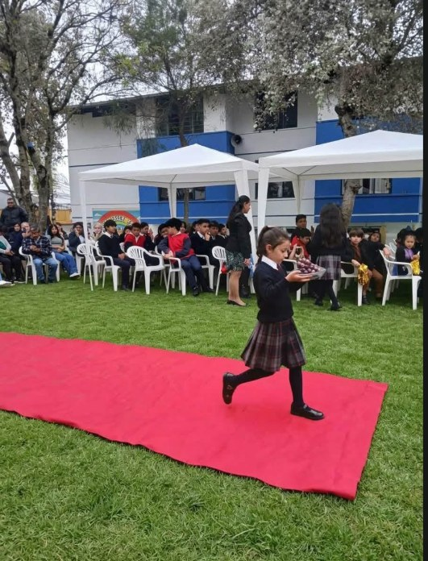

01DESCUBRIR
Educación Inicial
Primeros aprendizajes a través del juego, la exploración y el desarrollo de habilidades en un entorno cálido e inclusivo.
Conocer más ↗Educación personalizada, inclusiva y cercana, con máximo 15 estudiantes por aula para acompañar el talento y el ritmo de aprendizaje de cada estudiante.


En la Educativa Particular “San Francisco” cada estudiante importa. Nuestro modelo de educación personalizada permite brindar acompañamiento cercano, reconocer las fortalezas individuales y apoyar los diferentes ritmos de aprendizaje.
Promovemos una educación inclusiva y humanista, en un ambiente de respeto, confianza y colaboración con las familias, para que niñas, niños y jóvenes desarrollen sus capacidades y construyan su futuro.
Una trayectoria educativa continua, con acompañamiento personalizado desde los primeros años hasta la preparación para nuevos desafíos.

01Primeros aprendizajes a través del juego, la exploración y el desarrollo de habilidades en un entorno cálido e inclusivo.
Conocer más ↗ 02
02Fortalecemos conocimientos, autonomía, pensamiento crítico y hábitos de aprendizaje en cada etapa.
Conocer más ↗
03Desarrollamos criterio propio y herramientas para continuar estudios y afrontar nuevos retos.
Conocer más ↗Complementamos la formación académica con experiencias que fortalecen habilidades, confianza, bienestar y autonomía.
Una actividad para desarrollar habilidades acuáticas, coordinación y seguridad en el agua.
Acompañamiento para organizar las tareas, reforzar hábitos de estudio y aprender con confianza.
Refuerzo para fortalecer conocimientos y atender necesidades específicas de aprendizaje.
Servicio de transporte escolar para facilitar el traslado entre el hogar y la institución. Consulta cobertura y disponibilidad.
Educar es acompañar a cada persona a descubrir lo mejor de sí misma.NUESTRO COMPROMISO CON CADA ESTUDIANTE
Nuestros espacios verdes, actividades escolares y experiencias compartidas forman parte de una educación activa, inclusiva y llena de vida.
La galería está preparada para incorporar tus fotografías institucionales.
Espacio para compartir novedades, fechas importantes, proyectos y logros de nuestros estudiantes.
Conoce nuestra propuesta educativa, los servicios complementarios y las novedades para las familias. Contáctanos para recibir información actualizada.
Consultar información →Natación, tareas dirigidas, nivelación académica y espacios de recreación complementan la experiencia escolar.
Explorar galería →Consulta cupos, requisitos y el proceso de admisión directamente con nuestro equipo.
Solicitar información →¿Quieres conocer nuestra propuesta educativa? Estamos listos para ayudarte.
Comunícate con la Unidad Educativa San Francisco. Completa el formulario para preparar tu consulta o utiliza nuestros canales institucionales.